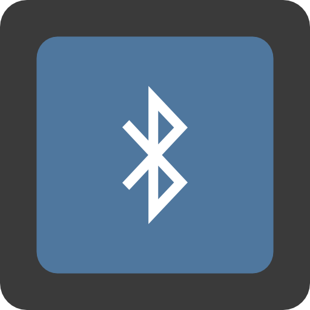

ToggleBlue
The simplest Bluetooth toggle for Android!
ToggleBlue fills the need on Android devices that are stuck without a quick means for toggling Bluetooth. Once installed, tapping on its launcher icon will simply toggle Bluetooth, without a distracting user-interface.